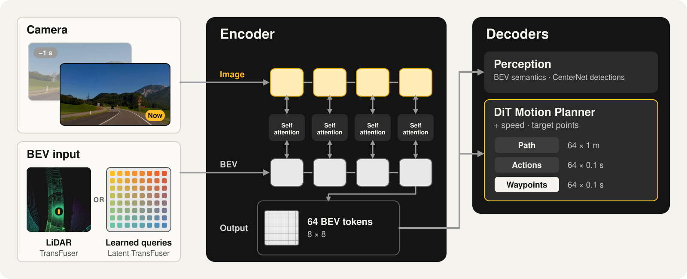
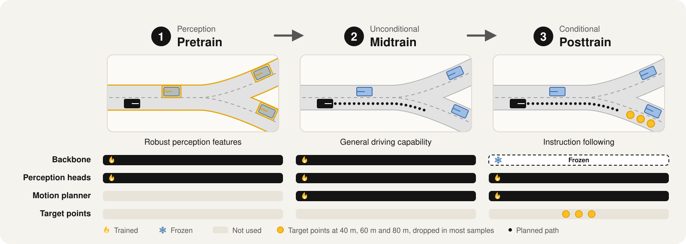
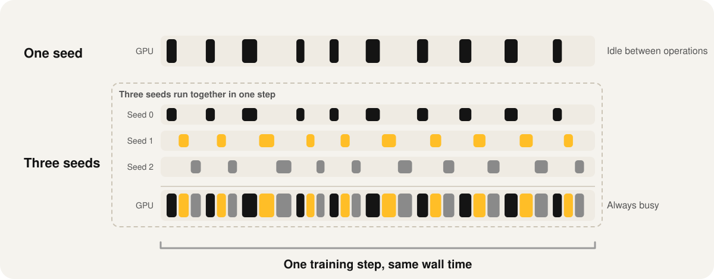

Research ·
Learning to Drive in a Day: An Open Recipe for End-to-End Driving Policies that Generalize across Benchmarks
Open-weight models are advancing the capabilities of autonomous systems over a broad set of domains[1][2]. In the LLM and robotics communities, open-weight models have helped accelerate progress by enabling researchers to build on shared foundations, setting an encouraging example for autonomous driving[3], where model weights have traditionally remained closed. However, even with open weights, high data and compute costs as well as closed training recipes limit reproducibility, slowing down the community's efforts to address a model's limitations.
NVIDIA's Alpamayo 1, for example, releases weights and inference code, but neither its 80,000 hours of curated proprietary training data, likely selected from more than a million hours of driving, nor its training recipe[3]. In contrast, fully open models with open recipe releases, which include data, code, models, and evaluations, are playing an important role in enabling research progress[4][5][6]. Unfortunately, in driving, existing fully open models have a different limitation: they are specialists, models which either only use a single benchmark or require independently tuned weights for each benchmark[7][8]. Today, we change this. We are releasing our first fully open recipe for end-to-end driving:
- General and fully open pipeline: Developed with minimal assumptions about the model architecture or the target benchmarks, our three-stage training pipeline effectively tackles two key challenges in training driving policies, the copycat problem[9][10] and the target point bias[11][12].
- Efficient infrastructure: The complete training runs on a single 8×H100 node in under a day. One command evaluates a checkpoint on seven different driving benchmarks.
- The experiments behind the release: We share an open research log of more than 50 experiments. Importantly, we also include the experiments that failed.
- A strong, reproducible baseline: Trained exclusively on public data and evaluated on seven benchmarks, our baseline model achieves competitive performance across all of them (Figure 1, details in Appendix A).
A training recipe against shortcut learning
Central to our experiments is TransFuser-K1, a camera-only Latent TransFuser[13] with a diffusion transformer as motion planner (Figure 2). As input, the policy receives the front camera of the current timestep and one second earlier, the ego speed and, optionally, target points 40 m, 60 m and 80 m ahead on the intended route. We train on about 1,800 hours of public driving data (Table 14): the Physical AI AV dataset[14] (about 1,650 hours), the camera subset of nuPlan[15] (about 124 hours) and the NuRec training scenes of AlpaSim (about 7 hours).

Training a driving policy end-to-end is notoriously difficult, and much of the difficulty comes from shortcut learning[16]. A policy takes the easiest path to minimizing its training loss, and unless this is done carefully, the policy can lean on cues that are unreliable at test time. In driving, two cues make shortcut learning highly likely. The first is the target points: following them is easier than interpreting the sensory inputs, so the policy steers toward them even when a point lies off the road, a phenomenon studied thoroughly in our prior work[11][12]. The second is the ego speed: driving data consists mostly of nominal driving, where extrapolating the current speed explains most of the future speed. A policy that learns this keeps its speed instead of reacting to the scene, and brakes too late when the car ahead slows down. This is typically referred to as the inertia or copycat problem, and has been observed consistently since the pioneering research on end-to-end driving policies[10].
To tackle these two shortcuts, we decompose training into three stages (Figure 3). The two inputs that enable these shortcuts, the ego speed and the target points, are added only in later stages, after the network has learned to perform the perception and driving without them. In pretraining, the network focuses on learning robust perception features, making the policy interpret its sensory inputs. In midtraining, a planning decoder with access to the current vehicle speed is attached to the output of the pretrained encoder, and the policy learns general driving without target points to follow. In the final posttraining stage, target points are provided to the planner, so the policy learns to follow an instruction in addition to the driving capability it already has.

Four elements are central to our recipe, as evidenced by our experiments (Figure 4, details in Appendix B):
- Diffusion planning loss. A regression loss averages its output when several outputs are correct. Without target points in midtraining, this ambiguity arises at intersections and forks, where the human driver could take several different paths, and the averaged path runs between the lanes. A diffusion transformer trained with flow matching[17] can in principle learn all of them in training and commit to one at test time. This makes the policy mode-seeking instead of mean-seeking.
- Three training stages. Training the planner first without target points (midtraining) and only afterward with them (posttraining) works better than providing target points to the planner from the start (same compute budget).
- Target point dropout. During posttraining, we drop each target point with a probability of 91 %, so 75 % of the training samples contain no target point and the planner still has to drive from the sensory inputs alone. The target points thereby remain an auxiliary cue that resolves ambiguities such as forks, rather than a signal the policy can directly copy.
- Temporal input. A single frame carries no motion information. Hence, the planner can only infer the dynamics of the scene from the ego speed, which reinforces the inertia shortcut. Stacking the front-camera frame from one second earlier exposes the relative motion of surrounding traffic and reduces collisions.
Real progress should hold across benchmarks
The hidden test sets of the AlpaSim challenge[18], which we co-organize with NVIDIA and OpenDriveLab, are unseen by policies trained only on public data. The challenge offers two tracks, nuPlan and Physical AI, with two different private test datasets. Their scenes are not released to participants, including us as co-organizers, and submissions are scored by the challenge server. A strong baseline on the Physical AI test set is Alpamayo 1[3], NVIDIA’s 10B parameter policy trained on 80,000 hours of internal driving data, far more than is publicly available and recorded by the same fleet as the test scenes. Our 68M parameter policy is trained on 1,800 hours of public driving data.
During the development of our policies, we observed that checkpoints that did well on the validation scenes of only one of the two AlpaSim tracks underperformed Alpamayo 1 on the hidden test set of the Physical AI track. Only after combining all four elements of the training recipe (Figure 4) did we obtain a policy that does well on the public validation scenes of both nuPlan and Physical AI at the same time, and achieves a higher score than Alpamayo 1 on the hidden Physical AI test set (Figure 5).
The general lesson: a policy that drives well only on one benchmark may just have specialized to that benchmark’s metrics. Most prior work evaluates one architecture on a single or a small set of benchmarks and retrains or tunes it for each. In contrast, we evaluate one checkpoint, unchanged, on seven independent benchmarks: both AlpaSim tracks, Odyssey[19], HUGSIM[20], NavSafe-∞[53], and NAVSIM[21] v1 and v2[22] (Figure 1, right; per-benchmark results in Table 1). Our policy scores higher than the best published policy trained under the same conditions (trained only to imitate human driving, without closed-loop fine-tuning or benchmark-specific tuning) on both AlpaSim tracks, on par on HUGSIM, and lower on Odyssey, NavSafe-∞ and NAVSIM.
Gains that hold across all seven benchmarks are more likely to reflect better driving. This is the premise of the common task framework behind the AlpaSim challenge, and we will extend our evaluation as further independent benchmarks with held-out test sets become available.
Learning to drive in a day
Our training code allows others to reproduce our numbers and build on them without a large compute budget. The full recipe trains three seeds in 21 hours on one node with eight H100 GPUs. Two techniques, with minimal assumptions about the underlying architecture, make this affordable:
Training multiple seeds efficiently. A 68M parameter model cannot utilize a GPU like the H100 at its full potential. This is in particular a problem since, in our experience, driving policies have always had trouble scaling with batch size under the limited scale and diversity of public driving datasets. Our release tackles this issue by fitting three seeds into one training session (Figure 6). The step of all three seeds is recorded once as a CUDA graph and replayed every step, so the GPU does not idle between operations. Multiple seeds are essential for reliable conclusions: closed-loop scores vary by about 3 points from seed to seed on the Physical AI track, and now and then one seed converges to a lower score than the others, so every number in this post, except the leaderboard submissions, is a mean of three training seeds.

Random access into compressed video. py123D[23] stores cameras as MP4 streams. At 1,800 hours of driving this is a necessity rather than a convenience: compressed video keeps the logs small enough to store, copy and share. Policy training, however, samples individual frames in random order, and reading one frame from an MP4 requires decoding every frame since the last keyframe. Our release therefore introduces a flexible cache system, built on LMDB[24], that allows random-access training from a lightweight cache (Figure 7). A sample holds the policy’s features and labels, each tensor with its own codec, and the policy builds what is not cached from the logs at training time. It scales with the logs: one store per log lets the cache build in parallel, and one file per log instead of millions of small ones avoids hitting the file system’s limit on the number of files.
Conclusion
Our results lead to two conclusions:
- The training recipe matters more than the encoder. We kept the TransFuser encoder and replaced only the planner with a diffusion transformer. Adding the ego speed and the target points only in later training stages was sufficient to avoid both shortcuts, as in our earlier work in CARLA[11][12].
- Generalization requires several benchmarks. Validation scores on a single AlpaSim track did not predict the hidden test score (Figure 5). Evaluating one checkpoint on seven benchmarks, with three seeds per result, is therefore a more reliable measure of progress, in particular once policies are trained in closed loop[25].
We see the release as a starting point for research questions that need many affordable training runs:
- On-policy training. AlpaSim enables training a policy on the consequences of its own actions, beyond imitating recorded drives, a direction that recent work on closed-loop fine-tuning explores[26].
- Beyond TransFuser. TransFuser was designed in 2021 for about 30 hours of driving data. Its architectural assumptions may limit how much it benefits from 1,800 hours. We are working on architectures that remove these assumptions while staying efficient and performant.
Next, we are excited to take the policy out of the simulator and onto the road with our research vehicle.
Citation
@article{Dauner2026ARXIV,
title={123D: Unifying Multi-Modal Autonomous Driving Data at Scale},
author={Dauner, Daniel and Charraut, Valentin and Berle, Bastian and Li, Tianyu and Nguyen, Long and Wang, Jiabao and Jing, Changhui and Igl, Maximilian and Caesar, Holger and Ivanovic, Boris and Geiger, Andreas and Chitta, Kashyap},
journal={arXiv preprint arXiv:2605.08084},
year={2026}
}
@inproceedings{Nguyen2026CVPR,
title={LEAD: Minimizing Learner-Expert Asymmetry in End-to-End Driving},
author={Long Nguyen and Micha Fauth and Bernhard Jaeger and Daniel Dauner and Maximilian Igl and Andreas Geiger and Kashyap Chitta},
booktitle={Conference on Computer Vision and Pattern Recognition (CVPR)},
year={2026}
}
References
- Mistral AI. “Mistral Large 4.” Model card, Hugging Face, 2026.
- Physical Intelligence et al. “π0.5: a Vision-Language-Action Model with Open-World Generalization.” arXiv:2504.16054, 2025.
- Y. Wang et al. “Alpamayo-R1: Bridging Reasoning and Action Prediction for Generalizable Autonomous Driving in the Long Tail.” arXiv:2511.00088, 2025.
- D. Groeneveld et al. “OLMo: Accelerating the Science of Language Models.” arXiv:2402.00838, 2024.
- J. Marrie, P. Pacaud, A. Ramanana Rahary, S. Chen, M. Böhle. “REKI: Registering Knowledge in VLAs.” arXiv:2610.22178, 2026.
- F. Bartoccioni et al. “VaViM and VaVAM: Autonomous Driving through Video Generative Modeling.” arXiv:2502.15672, 2025.
- B. Liao et al. “DiffusionDrive: Truncated Diffusion Model for End-to-End Autonomous Driving.” CVPR, 2025.
- E. Kirby et al. “Driving on Registers.” arXiv:2601.05083, 2026.
- C. Wen, J. Lin, T. Darrell, D. Jayaraman, Y. Gao. “Fighting Copycat Agents in Behavioral Cloning from Observation Histories.” NeurIPS, 2020.
- F. Codevilla, E. Santana, A. M. López, A. Gaidon. “Exploring the Limitations of Behavior Cloning for Autonomous Driving.” ICCV, 2019.
- B. Jaeger, K. Chitta, A. Geiger. “Hidden Biases of End-to-End Driving Models.” ICCV, 2023.
- L. Nguyen, M. Fauth, B. Jaeger, D. Dauner, M. Igl, A. Geiger, K. Chitta. “LEAD: Minimizing Learner-Expert Asymmetry in End-to-End Driving.” CVPR, 2026.
- K. Chitta, A. Prakash, B. Jaeger, Z. Yu, K. Renz, A. Geiger. “TransFuser: Imitation with Transformer-Based Sensor Fusion for Autonomous Driving.” IEEE TPAMI, 2023.
- NVIDIA. “Physical AI Autonomous Vehicles Dataset.” Hugging Face.
- N. Karnchanachari et al. “Towards Learning-Based Planning: The nuPlan Benchmark for Real-World Autonomous Driving.” ICRA, 2024.
- R. Geirhos et al. “Shortcut Learning in Deep Neural Networks.” Nature Machine Intelligence, 2020.
- Y. Lipman, R. T. Q. Chen, H. Ben-Hamu, M. Nickel, M. Le. “Flow Matching for Generative Modeling.” ICLR, 2023.
- NVIDIA. “AlpaSim End-to-End Closed-Loop Challenge.” Hugging Face, 2026.
- J. Kim et al. “Odyssey: A Closed-Loop Benchmark for Long-Horizon Real-World Driving with Explicit Navigation Routes.” arXiv:2610.06469, 2026.
- H. Zhou, L. Lin, J. Wang, Y. Lu, D. Bai, B. Liu, Y. Wang, A. Geiger, Y. Liao. “HUGSIM: A Real-Time, Photo-Realistic and Closed-Loop Simulator for Autonomous Driving.” arXiv:2412.01718, 2024.
- W. Cao et al. “Pseudo-Simulation for Autonomous Driving.” CoRL, 2025.
- D. Dauner et al. “123D: Unifying Multi-Modal Autonomous Driving Data at Scale.” arXiv:2605.08084, 2026.
- D. Wilson and N. Watson. “lmdb documentation.” Version 3.0.0, Read the Docs, 2026.
- P. Karkus, M. Igl et al. “Beyond Behavior Cloning in Autonomous Driving: a Survey of Closed-Loop Training Techniques.” 2025.
- T. Li, L. Chen, C. Wang et al. “World Engine: Towards the Era of Post-Training for Autonomous Driving.” arXiv:2606.19836, 2026.
- H. Tian et al. “SimScale: Learning to Drive via Real-World Simulation at Scale.” CVPR, 2026.
- Z. Li et al. “Generalized Trajectory Scoring for End-to-end Multimodal Planning.” arXiv:2506.06664, 2025.
- J. Kim, J. Oh, S. Yu, H. Shin, D. Kwak, J. W. Choi. “SafeDrive: Fine-Grained Safety Reasoning for End-to-End Driving in a Sparse World.” CVPR, 2026.
- Y. Zhu et al. “ReDrive: Shaping Representations with World Modeling for End-to-End Driving.” arXiv:2609.33854, 2026.
- Z. Zhao et al. “SimWAM: A Simple World Action Model for End-to-End Autonomous Driving.” arXiv:2608.07468, 2026.
- Y. Li et al. “ReCogDrive: A Reinforced Cognitive Framework for End-to-End Autonomous Driving.” ICLR, 2026.
- B. Jiang et al. “VAD: Vectorized Scene Representation for Efficient Autonomous Driving.” ICCV, 2023.
- Y. Hu et al. “Planning-oriented Autonomous Driving.” CVPR, 2023.
- Z. Li, N. Chang, W. Yao et al. “Zero-Human Demonstration End-to-end Autonomous Driving with Trajectory Scorer.” arXiv:2510.24108, 2025.
- L. Rowe et al. “Scaling Self-Play for End-to-End Driving.” arXiv:2606.19641, 2026.
- H. He, C. Hu, Z. Su et al. “DriveZero: End-to-End Driving Beyond Human Demonstrations.” arXiv:2609.06055, 2026.
- Z. Xiong et al. “TerraTransfer++: Demonstration-Free End-to-End Planner.” arXiv:2610.30319, 2026.
- X. Weng, B. Ivanovic, Y. Wang, Y. Wang, M. Pavone. “PARA-Drive: Parallelized Architecture for Real-Time Autonomous Driving.” CVPR, 2024.
- S. Wang et al. “ForeDrive: Foresight-Guided End-to-End Autonomous Driving with a Planning-Relevant Latent World Model.” arXiv:2609.26299, 2026.
- Y. Yuan et al. “SUV: Future Scene Understanding as Video Generation for End-to-End Driving.” arXiv:2608.03084, 2026.
- J. Fu, Y. Yuan, M. Tian et al. “4D-WAM: 4D Consistent World Modeling for Autonomous Driving.” arXiv:2608.10107, 2026.
- Z. Zhang et al. “Do Better Visual Representations Always Lead to Better End-to-End Autonomous Driving?” arXiv:2610.09695, 2026.
- L. Feng et al. “RAP: 3D Rasterization Augmented End-to-End Planning.” ICLR, 2026.
- NVIDIA. “Physical AI Autonomous Vehicles NuRec Dataset.” Hugging Face.
- Q. Wu, J. Martinez Esturo, A. Mirzaei, N. Moenne-Loccoz, Z. Gojcic. “3DGUT: Enabling Distorted Cameras and Secondary Rays in Gaussian Splatting.” CVPR, 2025.
- O. Siméoni et al. “DINOv3.” arXiv:2508.10104, 2025.
- I. Radosavovic, R. P. Kosaraju, R. Girshick, K. He, P. Dollár. “Designing Network Design Spaces.” CVPR, 2020.
- K. He, X. Zhang, S. Ren, J. Sun. “Deep Residual Learning for Image Recognition.” CVPR, 2016.
- J. Deng, W. Dong, R. Socher, L.-J. Li, K. Li, L. Fei-Fei. “ImageNet: A Large-Scale Hierarchical Image Database.” CVPR, 2009.
- Z. Liu, H. Mao, C.-Y. Wu, C. Feichtenhofer, T. Darrell, S. Xie. “A ConvNet for the 2020s.” CVPR, 2022.
- R. Wightman. “PyTorch Image Models.” GitHub, 2019.
- W. Sun et al. “SparseDriveV2: Scoring is All You Need for End-to-End Autonomous Driving.” arXiv:2603.29163, 2026.
- Z. Zhou et al. “AutoVLA: A Vision-Language-Action Model for End-to-End Autonomous Driving with Adaptive Reasoning and Reinforcement Fine-Tuning.” NeurIPS, 2025.
- X. Li et al. “MTDrive: Multi-turn Interactive Reinforcement Learning for Autonomous Driving.” arXiv:2601.22930, 2026.
Thumbnail photo: Glenwood Canyon I-70 by Patrick Pelster, CC BY-SA 3.0 DE, via Wikimedia Commons; cropped, darkened and overlaid with text.
Appendix
Appendix A: Benchmark results
This appendix lists the results summarized in Figure 1. Table 1 compares our policy on each benchmark with the best published policy trained under the same conditions. Tables 2 to 10 list all baselines for each benchmark.
| Benchmark | Setting | Feedback | Metric | Ours | Best baseline, same conditions | Gap | |
|---|---|---|---|---|---|---|---|
| Policy | Score | ||||||
| AlpaSim Physical AI[18][14] | public validation | closed loop | AlpaSim score | 78.4 ± 0.7 | Alpamayo 1[3] | 56.0 | +22.4 |
| hidden test | closed loop | AlpaSim score | 63.2 | Alpamayo 1[3] | 56.0 | +7.2 | |
| AlpaSim nuPlan[18][15] | public validation | closed loop | AlpaSim score | 90.3 ± 0.5 | SimScale GTRS-Dense[27][28] | 88.5 | +1.8 |
| hidden test | closed loop | AlpaSim score | 92.2 | SimScale DiffusionDrive[27][7] | 77.8 | +14.4 | |
| Odyssey[19] | non-reactive traffic | closed loop | RouteDS | 43.3 ± 3.5 | SafeDrive[29] | 44.4 | −1.1 |
| reactive traffic | closed loop | RouteDS | 43.3 ± 3.6 | SafeDrive[29] | 48.9 | −5.6 | |
| HUGSIM[20] | pre-challenge | closed loop | HD-Score | 38.5 ± 1.3 | DrivoR-Scale[8] | 38.1 | +0.4 |
| NavSafe-∞[53] | 280 safety scenarios | closed loop | Driving score | 72.1 ± 1.1 | SimScale GTRS-Dense[27][28] | 73.5 | −1.4 |
| NAVSIM v1[21] | navtest | open loop | PDMS | 87.9 ± 0.1 | ReDrive[30] | 91.0 | −3.1 |
| NAVSIM v2[22] | navhard | open loop | EPDMS | 34.9 ± 0.4 | SimWAM[31] | 37.6 | −2.7 |
We compare our policy only with baselines that are trained under the same conditions. Each benchmark is only a proxy for driving in the real world. If a baseline is trained on quantities that the benchmark measures, a higher score is less informative about how well the baseline would drive on real roads. We therefore exclude two types of baselines from Table 1:
- Metric training. The baseline is trained to predict the metric of the benchmark, or it uses such predictions to select its plan at test time. This mainly affects NAVSIM, where many baselines learn to predict the PDM score or its sub-scores and select the plan with the highest predicted score. We exclude such a baseline only on the benchmark whose metric it is trained on. DrivoR and DrivoR-Scale, for example, are trained on the PDM score of NAVSIM, so we exclude them on NAVSIM but not on HUGSIM.
- Distillation from reinforcement learning. The baseline imitates a teacher that is trained with reinforcement learning in closed-loop simulation, with rewards designed for the benchmark. This mainly affects HUGSIM, where GigaPixel, DriveZero, DriveZero-Scale and TerraTransfer++ are trained in this way. We exclude such a baseline only on the benchmark that its teacher is trained for.
Tables 7, 9 and 10 show the excluded baselines as gray rows. A high NAVSIM score obtained with metric training does not necessarily carry over to the closed-loop benchmarks. GTRS-Dense, ZTRS and DrivoR score 45.3, 48.1 and 54.5 EPDMS on navhard (Table 10), 10.4 to 19.6 points higher than our policy and higher than every policy without metric training. On HUGSIM (Table 7), the same three methods score 28.2, 32.9 and 35.7 HD-Score, 2.8 to 10.3 points lower than our policy. SimScale GTRS-Dense scores 48.0 EPDMS on navhard but 76.2 on the hidden test set of the AlpaSim nuPlan track (Table 5), 16.0 points lower than our policy.
Closed loop
| Policy | Navigation conditioning | Score ↑ | km per incident ↑ | Off-road ↓ | Collision ↓ | Corridor ↓ | Progress ↑ |
|---|---|---|---|---|---|---|---|
| Alpamayo 1[3] | × | 56.0 ± 1.0 | 0.96 | 10.3 % | 5.4 % | 24.3 % | 75.3 |
| Alpamayo 1.5[3] | × | 55.3 ± 0.7 | 0.94 | 11.3 % | 5.2 % | 25.4 % | 76.3 |
| TransFuser-K1 (Ours) | × | 64.2 ± 0.4 | 1.28 | 6.3 % | 7.3 % | 15.2 % | 79.3 |
| ✓ | 78.4 ± 0.7 | 1.44 | 5.8 % | 7.0 % | 3.3 % | 84.6 |
| Policy | Navigation conditioning | Score ↑ | km per incident ↑ | Off-road ↓ | Collision ↓ | Corridor ↓ | Progress ↑ |
|---|---|---|---|---|---|---|---|
| SimScale DiffusionDrive[27][7] | Command | 83.4 | 0.25 | 7.7 % | 0.7 % | 4.9 % | 81.2 |
| SimScale Latent TransFuser[27][13] | Command | 86.3 | 0.32 | 5.7 % | 1.4 % | 3.4 % | 82.6 |
| SimScale GTRS-Dense[27][28] | Command | 88.5 | 0.35 | 3.7 % | 0.9 % | 2.5 % | 82.9 |
| TransFuser-K1 (Ours) | × | 89.6 ± 0.3 | 0.63 | 3.8 % | 0.4 % | 1.0 % | 79.3 |
| ✓ | 90.3 ± 0.5 | 0.72 | 3.3 % | 0.5 % | 0.8 % | 79.6 |
| Policy | Scene score ↑ | km per incident ↑ | Dist. to GT ↓ |
|---|---|---|---|
| Host: go straight with delay | 17.5 | 0.14 | 2.16 |
| Host: Alpamayo 1[3] | 56.0 | 0.57 | 2.29 |
| TransFuser-K1 (Ours) | 63.2 | 0.65 | 1.09 |
| Policy | Scene score ↑ | km per incident ↑ | Dist. to GT ↓ |
|---|---|---|---|
| OpenDriveLab: SimScale Latent TransFuser[27][13] | 74.1 | 0.27 | 2.27 |
| OpenDriveLab: SimScale GTRS-Dense[27][28] | 76.2 | 0.41 | 2.17 |
| OpenDriveLab: SimScale DiffusionDrive[27][7] | 77.8 | 0.27 | 2.16 |
| TransFuser-K1 (Ours) | 92.2 | 0.68 | 0.63 |
| Policy | Navigation conditioning | Non-reactive | Reactive | ||||||||||
|---|---|---|---|---|---|---|---|---|---|---|---|---|---|
| RouteDS ↑ | SDC ↑ | PLCA ↑ | PLCS ↑ | Eff. | Comf. ↑ | RouteDS ↑ | SDC ↑ | PLCA ↑ | PLCS ↑ | Eff. | Comf. ↑ | ||
| Latent TransFuser[13][21] | × | 16.2 | 51 | 66.0 | 50.3 | 63.9 | 100 | 16.3 | 54 | 63.5 | 49.1 | 76.1 | 99 |
| SD route | 20.1 | 95 | 57.1 | 56.1 | 68.2 | 96 | 23.0 | 93 | 53.6 | 52.6 | 78.0 | 93 | |
| ReCogDrive (VLA)[32] | × | 15.4 | 71 | 75.7 | 59.0 | 76.9 | 100 | 20.3 | 62 | 77.1 | 58.7 | 93.7 | 99 |
| SD route | 21.5 | 83 | 74.4 | 55.8 | 59.3 | 98 | 26.3 | 84 | 75.6 | 56.7 | 75.5 | 98 | |
| DiffusionDrive[7] | × | 25.6 | 59 | 78.8 | 63.7 | 61.4 | 100 | 24.2 | 59 | 77.0 | 63.1 | 75.7 | 100 |
| SD route | 35.9 | 100 | 82.0 | 80.5 | 63.4 | 99 | 41.0 | 100 | 81.2 | 80.2 | 71.5 | 99 | |
| DrivoR[8] | × | 20.6 | 50 | 75.5 | 62.8 | 104.7 | 44 | 25.5 | 53 | 76.6 | 62.8 | 133.4 | 47 |
| SD route | 36.5 | 90 | 72.8 | 66.0 | 84.5 | 60 | 41.4 | 89 | 71.8 | 66.0 | 107.4 | 64 | |
| TransFuser-K1 (Ours) | SD route | 43.3 ± 3.5 | 87 | 83.7 | 67.5 | 78.0 | 67 | 43.3 ± 3.6 | 86 | 84.3 | 67.8 | 87.4 | 71 |
| SafeDrive[29] | × | 27.5 | 41 | 79.3 | 63.7 | 69.4 | 47 | 30.4 | 45 | 78.8 | 62.8 | 86.3 | 40 |
| SD route | 44.4 | 82 | 75.0 | 69.8 | 68.3 | 44 | 48.9 | 79 | 73.8 | 69.5 | 81.3 | 49 | |
| Policy | Navigation conditioning | RL teacher | HD-Score ↑ | RC ↑ | ||||||||
|---|---|---|---|---|---|---|---|---|---|---|---|---|
| Avg. | E | M | H | X | Avg. | E | M | H | X | |||
| VAD[33] | Command | × | 13.4 | 36.3 | 9.5 | 8.0 | 11.5 | 31.4 | 51.3 | 31.1 | 25.3 | 26.5 |
| Latent TransFuser[13][21] | × | × | 23.7 | 58.9 | 18.0 | 9.8 | 25.9 | 38.9 | 67.8 | 35.1 | 26.2 | 40.5 |
| GTRS-Dense[28] | Command | × | 28.2 | 57.8 | 35.2 | 16.2 | 5.8 | 34.5 | 62.0 | 40.5 | 23.9 | 13.7 |
| UniAD[34] | Command | × | 32.7 | 64.9 | 45.8 | 20.6 | 6.6 | 45.9 | 78.4 | 60.5 | 33.6 | 17.8 |
| ZTRS[35] | Command | × | 32.9 | 66.9 | 37.9 | 21.1 | 9.8 | 42.0 | 74.8 | 46.1 | 31.6 | 20.0 |
| DrivoR[8] | × | × | 35.7 | 73.3 | 34.6 | 18.8 | 32.5 | 49.8 | 80.9 | 50.5 | 33.8 | 47.1 |
| DrivoR-Scale[8] | × | × | 38.1 | 64.8 | 50.3 | 16.8 | 25.8 | 46.4 | 70.4 | 54.4 | 28.2 | 39.2 |
| GigaPixel[36] | Command | ✓ | 38.5 | 67.4 | 51.9 | 19.1 | 21.6 | 50.1 | 78.6 | 60.7 | 32.7 | 35.4 |
| TransFuser-K1 (Ours) | × | × | 38.5 ± 1.3 | 73.1 | 54.6 | 23.3 | 9.7 | 46.7 | 79.8 | 61.8 | 31.4 | 20.6 |
| DriveZero[37] | Command | ✓ | 39.4 | 78.5 | 47.2 | 16.0 | 28.7 | 53.9 | 85.5 | 63.7 | 31.7 | 43.3 |
| DriveZero-Scale[37] | Command | ✓ | 46.6 | 81.9 | 60.5 | 24.7 | 27.6 | 54.5 | 87.5 | 64.9 | 34.6 | 39.8 |
| TerraTransfer++[38] | Goal | ✓ | 51.8 | – | – | – | – | – | – | – | – | – |
Open loop
On NAVSIM, our policy receives no navigation input. The baselines receive the driving command of NAVSIM (left, straight or right). Our policy has no input for this command, only for target points on the route, which contain more information than the command. To keep the scores comparable, we remove the target points, and the policy drives from the camera frames and the ego speed alone.
Appendix B: Recipe ablations and training data
This appendix reports the experiments summarized in Figure 4, one section for each element of the recipe, and the training data. All results are the mean ± standard deviation over three seeds on the 441 Physical AI and 1,485 nuPlan scenes of AlpaSim. The experiments were run in different phases of development, with different settings and bug fixes. Their scores can therefore be compared within a table or within a block of a table, but not across tables or with Tables 2 and 3. Appendix C reports further experiments that are not discussed in the main text.
Diffusion planning loss
We compare the L1 regression head of TransFuser with a diffusion transformer trained with flow matching (Table 11). The diffusion transformer scores 5.4 points higher on the Physical AI track and has fewer at-fault collisions. On nuPlan, the two differ by less than one standard deviation.
| Planner | Physical AI | nuPlan | ||||
|---|---|---|---|---|---|---|
| Score ↑ | At-fault collisions ↓ | Corridor exits ↓ | Score ↑ | At-fault collisions ↓ | Corridor exits ↓ | |
| L1 regression | 52.9 ± 1.4 | 78 | 59 | 84.8 ± 0.5 | 7 | 18 |
| Diffusion transformer, flow matching | 58.3 ± 1.3 | 49 | 49 | 84.0 ± 1.3 | 5 | 20 |
Training stages and target point dropout
In our experiments, the target points are the shortcut that reduces the closed-loop score the most. Adding them only in posttraining, after the policy has learned to drive from the camera, improves both scores (Table 12, upper block). Without dropout, however, the policy loses much of this driving ability during posttraining and relies on the target points instead. We therefore drop the target points in a share of the posttraining samples and replace them with a learned placeholder token. Both scores increase with the share of samples without target points, up to the 75 % used for the released policy (Table 12, lower block), and the number of off-road scenes falls from 175 to 68 per seed. Dropout does not remove the target point bias. It only controls how strongly the policy relies on the target points, and the best rate depends on the model configuration, for example on the length of the predicted path (Appendix C). A method that makes the policy use the route only where the scene is ambiguous remains an open problem.
| Training | Physical AI score ↑ | nuPlan score ↑ |
|---|---|---|
| Development phase A | ||
| Baseline: two stages, target point from the start | 58.4 ± 1.2 | 75.5 ± 0.1 |
| Three stages, target point only in posttraining | 61.4 ± 0.9 | 77.3 ± 0.2 |
| Development phase B | ||
| Baseline: three stages, no dropout | 71.3 ± 2.8 | 77.6 ± 0.8 |
| No target point in 25 % of samples | 71.8 ± 1.1 | 79.7 ± 0.7 |
| No target point in 50 % of samples | 72.6 ± 2.8 | 81.8 ± 1.0 |
| No target point in 75 % of samples | 74.4 ± 2.4 | 87.1 ± 0.6 |
Temporal input
A single frame does not show whether the car ahead is braking, so a policy that sees only the current frame relies on the ego speed instead. In our earlier experiments in CARLA, temporal input rarely improved policies trained by imitation. On AlpaSim, it does. Stacking the front-camera frame from 1 s earlier with the current frame adds 7.3 points on the Physical AI track and reduces the at-fault collisions from 61 to 25 per seed (Table 13). On nuPlan, it adds 1.8 points.
| Camera input | Physical AI | nuPlan | ||||
|---|---|---|---|---|---|---|
| Score ↑ | At-fault collisions ↓ | Corridor exits ↓ | Score ↑ | At-fault collisions ↓ | Corridor exits ↓ | |
| Current frame only | 54.7 ± 1.1 | 61 | 65 | 86.6 ± 0.3 | 9 | 23 |
| Current and 1 s past frame | 62.0 ± 0.8 | 25 | 73 | 88.4 ± 0.2 | 6 | 24 |
Training data
The released policy is trained on three public datasets, and all three training stages use the same data (Table 14). Training samples are drawn at a fixed frequency along each log. This frequency differs between datasets, so the share of samples from a dataset differs from its share of hours.
| Dataset | Splits used | Hours | Sample frequency |
|---|---|---|---|
| Physical AI AV[14] | train, val, test, except NuRec[45][46] clips | about 1,650 | 0.5 Hz |
| nuPlan[15], logs with camera data only | train, val | about 124 | 5 Hz |
| NuRec (AlpaSim) | train, other | about 7 | 10 Hz |
| Total | about 1,800 |
Appendix C: Further experiments
This appendix reports experiments that are not discussed in the main text: further temporal and speed inputs, the image encoder, the development of the flow-matching planner and the target point dropout for a longer path. The setup is the same as in Appendix B, and scores can only be compared within a table. The research log lists all experiments, including those not shown here.
Past frames and ego history
A second past frame at 0.5 s does not improve the scores (Table 15). On nuPlan, the vehicle remains stationary in more rollouts, likely because the first plans of a rollout are computed before the oldest frame is available.
| Camera input | Physical AI | nuPlan | ||||
|---|---|---|---|---|---|---|
| Score ↑ | At-fault collisions ↓ | Corridor exits ↓ | Score ↑ | At-fault collisions ↓ | Corridor exits ↓ | |
| Current and 1 s past frame (Table 13) | 62.0 ± 0.8 | 25 | 73 | 88.4 ± 0.2 | 6 | 24 |
| Current, 0.5 s and 1 s past frames | 59.0 ± 0.9 | 30 | 84 | 88.5 ± 0.3 | 6 | 27 |
We also replaced the current speed with a token that encodes the past ego motion (Table 16). This raises the nuPlan score by about 4 points but reduces the Physical AI score by 7 to 17 points, with more off-road scenes and corridor exits for longer histories. A policy optimized only for the nuPlan track should therefore receive the past ego motion. Since we aim for one policy that drives well across benchmarks and data sources, the released policy receives only the current speed.
| Ego input | Physical AI score ↑ | nuPlan score ↑ |
|---|---|---|
| Current speed only | 60.9 ± 1.8 | 79.6 |
| Ego history of 0.1 s | 53.5 ± 1.0 | 83.9 |
| Ego history of 0.2 s | 53.7 ± 2.3 | 84.0 |
| Ego history of 0.5 s | 43.6 ± 0.2 | 84.1 |
Speed input
Since the ego speed enables the inertia shortcut, we removed the speed input in a share of the training samples (Table 17). Dropout rates of 25 to 75 % do not reduce the number of front collisions on the Physical AI track and reduce the nuPlan score by up to 2 points. Without any speed input, the Physical AI score decreases from 63.4 to 40.1.
| Speed dropout | Physical AI | nuPlan | |
|---|---|---|---|
| Score ↑ | Front collisions ↓ | Score ↑ | |
| 0 % | 63.4 ± 2.2 | 22 | 89.5 ± 0.7 |
| 25 % | 63.1 ± 2.0 | 20 | 88.9 ± 1.1 |
| 50 % | 65.6 ± 2.4 | 22 | 88.2 ± 1.0 |
| 75 % | 63.4 ± 4.5 | 22 | 87.5 ± 0.4 |
| 100 %, no speed input | 40.1 | 19 | 83.5 ± 0.5 |
Image encoder
Replacing the ResNet34 by a ConvNeXt-T pretrained on ImageNet-12k reduces the perception losses of pretraining by 10 to 24 %, but does not improve the closed-loop scores (Table 18). In our setting, the closed-loop score therefore appears to be limited by factors other than the perception quality that these losses measure. DINOv3[47] weights and the RegNetY-3.2GF[48] of the original TransFuser do not improve the scores either.
| Image encoder | Pretraining perception losses | Physical AI score ↑ | nuPlan score ↑ |
|---|---|---|---|
| ResNet34[49], ImageNet[50] | reference | 63.4 ± 2.2 | 89.5 ± 0.7 |
| ConvNeXt-T[51], ImageNet-12k[50][52] | −10 to −24 % | 61.9 ± 0.6 | 89.3 ± 0.4 |
Development of the flow-matching planner
Table 19 lists the steps from the first flow-matching planner to the released one. The most important step was deterministic sampling. Sampling can be made deterministic in two ways: with a fixed random seed or with zero temperature. A fixed seed reuses the same noise sample at every replanning step. With the seed we used, this noise sample biased every plan toward acceleration. Zero temperature starts every plan from the mean of the noise distribution and does not have this bias. With zero temperature, replacing the MSE loss on the flow field with an L1 loss on the denoised trajectory brings the planner to the same score as the regression planner. A horizon of 6.4 s and QK normalization in the attention (QK-norm) raise its score above that of the regression planner.
| Planner | Physical AI score ↑ | nuPlan score ↑ |
|---|---|---|
| Baseline: L1 regression (Table 11) | 52.9 ± 1.4 | 84.8 ± 0.5 |
| Flow matching, MSE loss on the flow field (noise-to-trajectory direction) | ||
| Same seed at every replanning step, temperature 1 | 34.8 ± 1.5 | 87.2 ± 0.6 |
| Same seed at every replanning step, temperature 0.5 | 40.2 ± 2.0 | 86.5 ± 0.3 |
| Mean of 16 plans, each from new noise | 45.8 ± 0.3 | 86.8 ± 0.8 |
| Temperature 0 (zero noise) | 47.7 ± 0.7 | 85.0 ± 0.9 |
| Flow matching, temperature 0 | ||
| L1 loss on the denoised trajectory, in meters | 53.8 ± 0.3 | 84.3 ± 0.4 |
| + 6.4 s horizon and QK-norm | 58.3 ± 1.3 | 84.0 ± 1.3 |
Path output and target point dropout
In addition to the waypoints, the planner predicts the path ahead as points 1 m apart, and actions derived from inverse kinematics. These additional outputs improve the scores slightly. The path is supervised with the recorded route, so a longer path can copy more of its shape from the target points instead of inferring it from the camera. A longer path therefore requires more target point dropout (Table 20). With a 64 m path, the policy trained with 75 % of the samples without target points has about twice as many off-road scenes on the Physical AI track as the policy trained with 95 % (55 compared with 27 per seed). The released checkpoint ltf-base-joint32-68M therefore uses a 32 m path with 75 %, and ltf-base-joint64-68M uses a 64 m path with 95 %.
| Samples without target point | Physical AI | nuPlan | ||
|---|---|---|---|---|
| Score ↑ | Off-road ↓ | Score ↑ | Off-road ↓ | |
| 75 % | 68.3 ± 2.2 | 55 | 88.3 ± 1.7 | 79 |
| 85 % | 74.6 ± 1.6 | 31 | 90.8 ± 0.1 | 49 |
| 95 % | 74.6 ± 2.4 | 27 | 91.2 ± 0.7 | 49 |